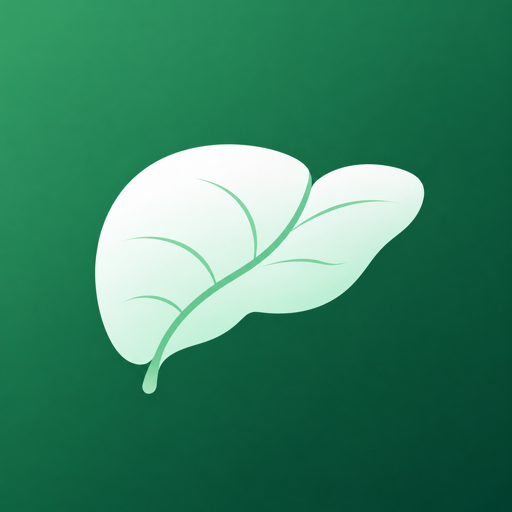

Privacy policy
- Your health records (meals, weight, activity, test results, scan numbers, medications) stay on your phone.
- No account, no ads, no tracking across apps, and we never sell data.
- To improve the app, it sends a few anonymous usage events (for example which setup screen was reached, or whether the Pro screen was closed), tied to a random ID that isn't linked to you.
- Only after you agree in the app, a food check's photo, voice clip or text is sent to third-party AI services (OpenRouter, Google's Gemini model or, as a backup, Mistral AI's model, and Deepgram for voice) for analysis, and isn't kept by us.
Who we are
Liverleaf is made by Javed Iqbal, an independent developer in Pakistan, who is responsible for your data under this policy. Contact: macroscountapp@gmail.com.
What stays on your phone
Everything you log: meals, weight, activity, liver test results, scan numbers, medications, goals, reminders and settings. It's stored in the app on your device and is never sent to us. Your phone's own backup (for example iCloud or Google) may include it, under your control. If you save a backup file, it goes wherever you choose.
What leaves your phone, and why
Food checks (AI, with your permission). Before your first photo, voice or typed check, the app shows what will be sent and to whom, and asks your permission. Nothing is sent unless you agree, and you can withdraw permission any time in You › Privacy and about › Share meals with the AI service. Barcode checks and common foods work without it. When you check a food by photo, voice or text, that photo, recording or text is sent over an encrypted connection to our server (Supabase, hosted in Japan). The server passes it to AI services to work out what the food is: OpenRouter, which sends it to the AI model we use (currently Google's Gemini, with Mistral AI's model as a backup), and for voice, Deepgram, which turns speech into text. We don't store the photo, recording or text after the check. The app keeps a small copy of a meal photo on your phone, with your food diary; that copy is never sent to us. These services process it under their own privacy terms and may keep it for a limited time, for example for security, abuse prevention or improving their service. They don't receive your name, contact details, test results, weight, medications or food diary. We only use providers whose terms protect this data at least as well as this policy does, and we use it only to answer that food check.
What we collect, how and why (summary). Meal photo, voice recording or text: collected when you start an AI food check, used only to identify the food and estimate nutrients, shared with OpenRouter, Google (Gemini), Mistral AI (backup) and Deepgram (voice only), not stored by us. Anonymous ID and check count: created by the app, used to run limits and Pro. Usage events: app opened, setup screen reached, setup finished, Pro screen shown and its outcome, first food check, with a separate random install ID, used only to improve the app. Purchase status: from Apple via Superwall. Support messages: what you type in the support chat.
Barcode lookups. When you scan a barcode, the barcode number is sent to Open Food Facts, a free public food database, to get the product's details.
Anonymous ID. The first time you open the app, it creates a random ID with no name, email or phone number attached. Our server uses it to count your free daily checks and to remember whether you have Pro. We store that ID, your daily check count and your Pro status.
Anonymous usage events. To see where new users get stuck, the app sends a few events to our server: that the app was opened, which setup screen someone reached (its name and number only, never the answers), that setup was finished, that the Pro screen was shown and how it ended (for example closed or bought), and that a first food check was done (only the kind, such as barcode). Each event carries a random ID created by the app on this install, the app version and the platform. It contains no name, contact details, health information or anything you typed, and it isn't linked to the anonymous ID above, to your purchases or to your support messages. The events are stored on our server (Supabase), can't be read with the app, and are used only to improve the app. Deleting the app removes the random ID; a new install starts with a new one.
Subscriptions. Purchases are handled by Apple or Google; we never see your payment details. We use Superwall to show the subscription screen and manage access to Pro. Superwall receives your anonymous ID, your purchase and subscription status, which subscription screens you see and tap, and basic device details (such as model, system version, language and region) so it can show the right offer.
Support messages. If you write to us from the app, we store your message with your anonymous ID, your phone's system version and the app version, so we can reply. If you email us, we receive your email address and message.
What we don't do
- No advertising and no ad networks.
- No tracking across other companies' apps or websites.
- No selling or renting of data, and no sharing of your health records.
- No use of your data to build marketing profiles.
Legal basis
If you're in the UK, the European Economic Area or a similar jurisdiction: we process data to provide the features you ask for (performance of a contract) and, for preventing abuse of free checks and answering support messages, for our legitimate interests.
How long we keep data
Your anonymous ID, check count and Pro status are kept while you use the app and only as long as needed to run the service. Support messages are kept until you ask us to delete them. Photos, recordings and text from food checks are not stored by us.
Your choices and rights
Deleting the app removes everything stored on your phone. To delete what our server keeps, write to us from the support chat in the app (so we can find your anonymous ID) and ask us to delete your data. You can also ask us for a copy of it, or to correct it. Depending on where you live, you may have the right to complain to your local data protection authority.
Where data is processed
Our server is in Japan. Our service providers may process data in the United States and other countries, with appropriate safeguards.
Children
Liverleaf is meant for adults and isn't directed at children under 13 (under 16 in the European Economic Area).
Changes
If we change this policy, we'll update the date above and, for important changes, tell you in the app.